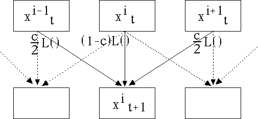

| To make a simple example of a system that can synchronize even
when chaotic, take N logistic maps
and couple each to its nearest neighbors. Letting |
| x1t, ...,
xNt |
| stand for populations 1, ..., N in generation t, we obtain the populations in
generation t+1 by |
| x1t+1 | = | (1-c)L(x1t) +
(c/2)(L(xNt) + L(x2t)) |
| x2t+1 | = | (1-c)L(x2t) +
(c/2)(L(x1t) + L(x3t)) |
| x3t+1 | = | (1-c)L(x3t) +
(c/2)(L(x2t) + L(x4t)) |
| ... | |
| xN-1t+1 | = | (1-c)L(xN-1t) +
(c/2)(L(xN-2t) + L(xNt)) |
| xNt+1 | = | (1-c)L(xNt) +
(c/2)(L(xN-1t) + L(x1t)) |
|
| This configuration is an example of a coupled
map lattice. Graphically, we have |
|  |
| Here c is the coupling constant,
a measure how how strongly
each value depends on its neighbors. For examaple, |
| c = 0 gives N
independent logistic maps: each depends only on itself, and |
| c = 1 given maps that depend not on their past, but on the
past of their neighbors. |
|